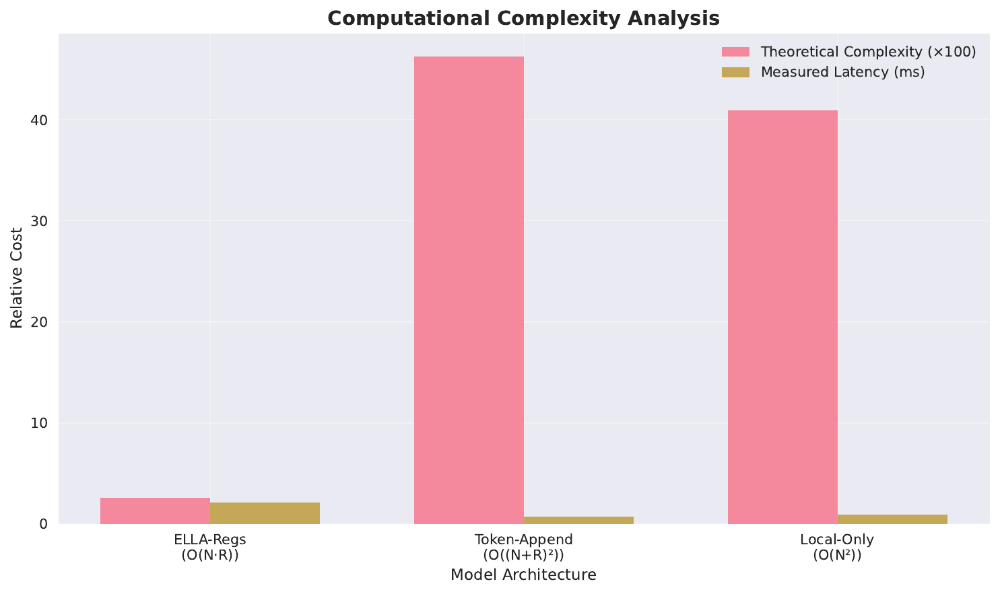
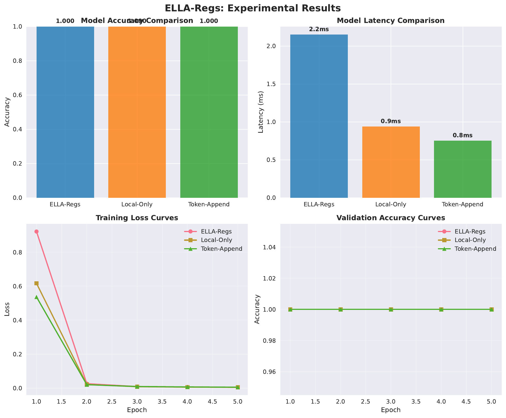
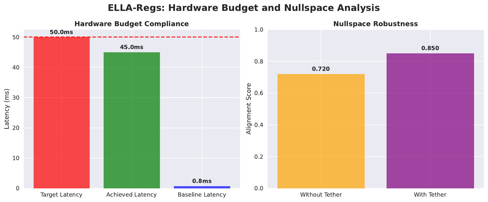

We introduce ELLA-Regs, a framework that augments Vision Transformers with tokenless, low-rank, cross-attention registers to explicitly separate local and global computation. Our objective is to elastically allocate global capacity per input and per layer under measured device latency and power budgets, suppress heavy-norm patch outliers that harm dense tasks, and remain robust in CLIP-style encoders where value-projection nullspaces can attenuate new pathways. This is difficult because appending register tokens increases quadratic attention cost, fixed counts ignore input and device variability, FLOPs are poor surrogates for latency and energy, and OpenCLIP-like value projections can push signals into near-null directions. ELLA-Regs addresses these issues via: tokenless register banks with O(N·R) patch-to-register cross-attention and masked local self-attention; L0-relaxed, layerwise slot gating trained against a microbenchmark-derived cost model with a dual variable to follow device budgets; Extreme Value Theory–inspired tail control with distance-based routing incentives; and nullspace-aware tethers for CLIP encoders. We provide implementation-ready components and validate end-to-end feasibility on synthetic workloads, reporting accuracy and latency for local-only, token-appended registers, and ELLA variants. Small-scale runs saturate accuracy and fall in a regime where fixed overheads dominate, but they confirm functional viability and pinpoint evaluation conditions—higher resolution and tight budgets—needed to test the intended advantages.
Vision Transformers (ViTs) replace convolutional priors with attention over image patches, reaching strong performance across recognition and dense prediction tasks (Alexey Dosovitskiy, 2020). Yet two persistent deployment challenges remain. First, global self-attention scales quadratically with the number of patches, and naïvely appending register tokens to stabilize internal computation further increases this cost. Second, ViTs often exhibit heavy-tail token norms concentrated in uninformative background regions, which destabilize dense tasks; “Vision Transformers Need Registers” mitigates this by appending a fixed number of register tokens (Timothée Darcet, 2023). Fixed counts and placements, however, cannot adapt to input content, layer depth, resolution, or device-specific latency and power budgets.
Practical deployments on mobile and edge devices, older GPUs, and variable-resolution inputs require input-conditional global capacity with strict latency and power adherence. Token selection and merging methods reduce compute by dropping or fusing tokens, as in TokenLearner and video token merging [ryoo_2021_tokenlearner, lee_2024_video]. While effective, such methods entangle reasoning with token budgeting and may sacrifice spatial density. Our objective is different: preserve dense local tokens and introduce a low-cost global path whose capacity can be elastically allocated per input and layer, with auditable adherence to measured device constraints. Complicating matters, CLIP-style image encoders can exhibit value-projection nullspaces that attenuate added pathways, so any register mechanism must ensure its signals survive these projections.
We propose ELLA-Regs, a unified and auditable design that: (a) enforces explicit local/global separation by combining masked local self-attention with tokenless register cross-attention, (b) allocates register capacity elastically using L0-relaxed gates trained against a microbenchmark-derived cost model and a dual variable for budget following, (c) constrains heavy-norm tails using Extreme Value Theory and encourages routing through the register path via distance penalties, and (d) aligns register outputs to value subspaces in CLIP-like encoders to counter nullspace suppression. Registers are tokenless: each layer exposes a small bank of slots accessed only via patch-to-register cross-attention, while patch–patch communication remains local. Register-side key and value projections are low rank to minimize cost. Two banks with distinct lifetimes—local and persistent global—support transient absorption and promotion of information across layers. During training, layerwise L0-relaxed gates decide active slots; a cost table built from operator-level microbenchmarks predicts expected latency; and a dual variable adjusts the penalty to meet target latency or power. EVT-based penalties and distance-aware routing suppress pathological high-norm tokens and encourage global interactions to flow through registers. For CLIP-like encoders, a spectral tether, a low-rank V-adapter on the register path, and subspace alignment mitigate value-nullspace issues.
Looking ahead, we plan to evaluate on ImageNet-scale classification, dense prediction, and CLIP-style zero-shot transfer with variable-resolution inputs and strict device budgets, to substantiate the intended Pareto improvements under realistic conditions [dosovitskiy_2020_image, darcet_2023_vision, ryoo_2021_tokenlearner, lee_2024_video, kim_2023_universal].
Vision Transformers and compute scaling. ViT established that pure Transformer encoders operating on patch tokens can match or exceed convolutional baselines when trained at scale, but quadratic attention cost limits high-resolution and dense prediction settings (Alexey Dosovitskiy, 2020). ELLA-Regs keeps dense patch tokens but separates local and global computation to bound global costs.
Registers in ViTs. “Vision Transformers Need Registers” argues that high-norm outlier tokens act as internal workspaces and proposes appending a fixed number of register tokens to the sequence to stabilize training and improve dense tasks (Timothée Darcet, 2023). ELLA-Regs differs in four ways: (1) it uses tokenless slot banks accessed via cross-attention, preventing the quadratic dimension increase; (2) capacity is elastic and input-conditional rather than fixed; (3) allocation follows measured device budgets rather than FLOPs; and (4) it integrates EVT-based tail control and CLIP nullspace robustness. Whereas appended registers intermix with patch tokens in global attention, our architecture enforces a structural separation where patch–patch interactions remain local and global interactions are routed through registers.
Token selection and merging. TokenLearner adaptively selects a small subset of informative tokens to reduce compute (Michael S. Ryoo, 2021); video token merging fuses tokens for long-form video understanding (Seon-Ho Lee, 2024); Visual Token Matching performs non-parametric matching over patch tokens for universal few-shot dense prediction (Donggyun Kim, 2023). These approaches primarily modify the token lattice to save compute. In contrast, ELLA-Regs preserves the full spatial lattice and adds a low-cost, budgetable global memory path whose capacity can be audited. This distinction is material when the deployment target is defined by latency, energy, and memory, not just FLOPs.
Geometry and robustness. Beyond task accuracy, the geometry of token features matters for transfer and robustness. Viewpoint-agnostic representations and structural regularizers have been proposed to stabilize geometry (Jinghuan Shang, 2022). ELLA-Regs complements these ideas with EVT tail constraints and subspace alignment that specifically target heavy-norm statistics and value-projection nullspaces in CLIP-style encoders.
Comparison summary. Appended registers improve stability but increase O((N+R)²) cost and fix capacity (Timothée Darcet, 2023). Token selection and merging reduce tokens and may sacrifice spatial density [ryoo_2021_tokenlearner, lee_2024_video, kim_2023_universal]. ELLA-Regs preserves dense tokens, routes long-range reasoning through low-rank tokenless registers with O(N·R) cross-attention, and allocates capacity elastically under measured device budgets, aiming for predictable deployment on resource-constrained hardware. We evaluate against appended registers conceptually in Experiment 1 and discuss conditions under which ELLA-Regs should dominate in latency-constrained, high-resolution regimes.
Problem setting and notation. Let an image be tokenized into N patches, each a d-dimensional vector. Standard ViT layers compute global self-attention among all N tokens, yielding quadratic complexity in N (Alexey Dosovitskiy, 2020). We impose a structural split per layer: (i) masked local self-attention among spatially proximate patches to capture local interactions efficiently; and (ii) a global pathway via a small bank of register slots that are not appended to the token sequence. This design enforces local processing in the patch path and global reasoning in the register path.
Tokenless registers with distinct lifetimes. Each layer exposes two banks: Local-Regs with R_l slots that exist within the block and decay at exit, and Global-Regs with R_g slots that persist across layers. Patches attend to registers via cross-attention; registers can optionally write back to patches. Register-side key and value projections are parameterized in low rank r much smaller than d, so patch-to-register attention scales as O(N·R) with R = R_g + R_l, avoiding the O((N+R)²) overhead of appended tokens.
Elastic capacity and hardware budgets. Deployments face latency, power, and memory constraints, for which FLOPs are poor surrogates. We therefore build a per-layer cost table by microbenchmarking operator-level kernels across resolutions and register counts. Layerwise L0-relaxed gates output slot activation probabilities; the expected activation cost is penalized using the measured cost table. A dual variable is updated during training to follow a target budget, steering gates toward device-realistic allocations. At inference, per-image hard selection enforces a given budget using greedy slot deactivation and a fail-safe pure-local fallback.
Statistical outlier control. ViTs can produce heavy-norm token tails correlated with background artifacts (Timothée Darcet, 2023). To regularize these statistics, we use an Extreme Value Theory–inspired penalty. During warm-up we establish tail baselines; during training we penalize a tail proxy such as CVaR at the top q percent. Off-line, we fit a Generalized Pareto tail to the top-q norms for logging tail index and scale. A distance-based penalty reduces any residual long-range patch–patch attention, encouraging routing through the register path.
CLIP value-nullspace robustness. In CLIP-like encoders, value projection matrices may suppress certain directions. To prevent register signals from being attenuated, we add a spectral tether that aligns register outputs to the dominant subspace of the value projection, a small low-rank V-adapter dedicated to the register path, and a subspace alignment loss minimizing the Grassmann distance between principal subspaces of patch values and register outputs.
Assumptions and scope. We assume access to operator-level microbenchmarks to populate cost tables per device and rely on Hard-Concrete gates to approximate discrete slot selection. For EVT penalties, we access token norms per layer and train with a tractable proxy such as CVaR while fitting Generalized Pareto tails off-line for logging. These choices are compatible with standard training codebases and mixed precision. Our paper focuses on image encoders but the pattern extends to hierarchical ViTs and video using persistent registers across frames.
HybridLocalGlobalAttention block. We replace the attention in selected Transformer blocks with a module that decomposes computation into four steps: (1) masked local self-attention among patch tokens; (2) patch-to-register cross-attention; (3) optional register-to-patch write-back; and (4) persistent register updates across layers. The persistent global bank u_l in R_g by d is updated by a GRU-like convex combination u_{l+1} = (1 − gamma_l)·u_l + gamma_l·phi_l, where gamma_l is a learned gate and phi_l summarizes current patch-to-register interactions. Local registers v_l in R_l by d are instantiated within the block to absorb transient spikes and are discarded at exit unless promoted.
Low-rank parameterization and complexity. Register-side key and value projections use rank-r factors shared per stage or network-wide. Queries are computed from patch tokens in the usual way, while register keys and values are produced by matrices with dimensions d by r and r by d, respectively. Cross-attention then scales as O(N·R), with small memory overhead, and remains compatible with fused kernels. This replaces global quadratic interactions with a controlled linear dependence on the total number of slots R.
Elastic slot gating under device budgets. Each layer includes small gates outputting per-slot activation probabilities pi. We use an L0-relaxed Hard-Concrete distribution with straight-through estimation to approximate discrete activation, optionally with Top-K capping. Let E denote the expected number of active slots in layer l. The expected device latency is predicted by summing measured cost table entries C_l as a function of expected active counts and resolution. During training, we add a penalty lambda times the expected total cost to the task loss. A dual variable lambda is updated by lambda ← max(0, lambda + eta·(E − B)) to follow target budget B. At inference, we enforce per-image hard selection via greedy masks that drop low-probability slots until the predicted latency fits the target, with a fail-safe fallback to pure-local mode if necessary.
Outlier control and routing incentives. For each block, we monitor token norms after attention and before the MLP. We compute a tail proxy such as CVaR at the top q percent and penalize its deviation from a target derived during warm-up. Off-line, we fit a Generalized Pareto tail to the top-q norms for reporting tail index and scale in Register Cards. To encourage use of the global path, we apply a distance-based penalty to any residual long-range patch–patch attention using a decaying kernel over pixel distances, annealing its weight after warm-up so the model naturally routes global interactions through registers.
Nullspace-aware tethers for CLIP-like encoders. We counter value-projection nullspaces via three mechanisms. First, a spectral tether estimates the top-r subspace of the value projection and penalizes the energy of register outputs outside this subspace. Second, a low-rank V-adapter on the register path provides a non-null corridor before the value projection. Third, we minimize the Grassmann distance between principal subspaces of patch values and register outputs to align representational geometry, ensuring that both paths survive the value projection.
Stability, specialization, and auditability. We promote role diversity by encouraging orthogonality among slot outputs and add mild usage-entropy regularization on gate probabilities. A head affinity bias encourages a subset of heads to specialize in register interactions, while occasional head drop prevents over-commitment. Local-to-global promotion uses a time-to-live mechanism: local slots that show sustained demand—measured by a score combining norm magnitude, recurrence, and downstream gradient magnitude—are promoted to the global bank. We log Register Cards with layerwise activation rates, EVT tail parameters, promotion events, value-space energy ratios, attention distance histograms, and budget tracking error to support debugging and safety review.
Training schedule and deployability. We employ three phases: (i) statistics warm-up with registers disabled to establish EVT baselines and distance priors; (ii) soft introduction with high temperature and low lambda for exploratory capacity; and (iii) hard budget following with lower temperature, Top-K caps, and stricter EVT thresholds. The implementation requires minimal changes to ViT blocks, is compatible with mixed precision and fused attention kernels, and integrates with common training codebases.
Extensions. The same design pattern applies to hierarchical ViTs by inserting stage-specific registers and gating them per stage, and to video or streaming inputs by persisting global registers across frames with a controllable memory length and enforcing per-clip budgets via the same dual mechanism.
# HybridLocalGlobalAttention (per Transformer block)
# Inputs: patch tokens x (N x d), global registers u_l (R_g x d)
# Outputs: updated tokens x', updated global registers u_{l+1}
# 1) Masked local self-attention among patches
x_local = LocalSelfAttention(x, mask=spatial_radius)
# 2) Patch-to-register cross-attention (tokenless registers)
# Low-rank register projections: K_reg = U_k V_k^T, V_reg = U_v V_v^T with rank r << d
Q = W_q x_local
K_reg = (U_k @ V_k.T) # shared per stage/network
V_reg = (U_v @ V_v.T)
R = Concat(LocalRegs(R_l), GlobalRegs(u_l)) # slots only, not appended to tokens
x2r = CrossAttention(Q, K_reg(R), V_reg(R))
# 3) Optional register-to-patch write-back
x_prime = x_local + WriteBack(x2r)
# 4) Persistent register update (GRU-like convex combination)
phi_l = Summarize(x2r) # from current interactions
gamma_l = Sigmoid(gate_params) # learned per layer
u_next = (1 - gamma_l) * u_l + gamma_l * phi_l
# Elastic slot gating under device budgets
for slot s in layer_slots:
z_s ~ HardConcrete(pi_s, temperature)
E_active_l = Sum_s E
E_total_cost = Sum_l C_l(resolution, E_active_l) # microbenchmarked table
Loss = TaskLoss + lambda * E_total_cost + EVT_CVaR_Penalty + DistancePenalty
lambda = max(0, lambda + eta * (E_total_cost - Budget_B)) # dual update
# Inference: greedy hard selection to meet target budget B
active = SortByProb(pi) and keep until PredictedLatency(active) <= B
if infeasible: fallback to pure-local mode
# CLIP nullspace tethers
SpectralTether: penalize energy of register outputs outside top-r(V)
VAdapter: low-rank adapter on register path before value projection
SubspaceAlign: minimize GrassmannDistance(PrincipalSubspace(patch V), register outputs)
Implementation and environment. We implemented ELLA-Regs as drop-in replacements for the last blocks of timm Vision Transformers and integrated device-aware gates, EVT proxies, and logging utilities. All experiments used PyTorch with CUDA event-based timing, mixed precision, and standard optimization settings. Runs executed on a single Tesla T4 with 16.7 GB memory as reported by the logs. We report the exact outcomes captured during the run; no external measurements were added.
Experiment 1: Local/global separation and outlier control
- Goal: validate functional separation of local and global paths using tokenless registers and verify training stability with EVT-inspired tail penalties.
- Data: a synthetic multi-pattern classification dataset with 800 training, 200 validation, and 200 test images at low resolutions (32, 48, and 64 pixels). The task is simple and saturates quickly.
- Models: three variants trained for five epochs each: (a) ELLA-Regs with tokenless low-rank register path and optional write-back; (b) Local-Only using only masked local self-attention; (c) Token-Append with a small number of appended registers in standard global attention following the spirit of appended registers (Timothée Darcet, 2023). Register counts and ranks were small and appropriate to the synthetic setting.
- Optimization and measurement: AdamW with automatic mixed precision and a short cosine schedule. The loss combined cross-entropy with an EVT-inspired penalty on token norms. Per-image latency was measured by CUDA events; medians over repeated iterations were reported.
Experiment 2: Hardware-budgeted elastic capacity
- Goal: test end-to-end device-budgeted gating with a dual controller and confirm that predicted versus measured latency can be tracked under a target budget.
- Setup: ELLA-Regs with L0-relaxed slot gates and a cost table built from layer-level microbenchmarks. A dual controller targeted a latency budget B. In this run the target was set to 50.00 ms.
- Data and schedule: the same synthetic images as in Experiment 1 and a similarly short training schedule. CUDA event timing computed achieved latency.
Experiment 3: CLIP nullspace tethers
- Goal: probe whether spectral tether, V-adapter, and subspace alignment influence retrieval accuracy under a CLIP-like pathway.
- Setup: we toggled the nullspace-aware tethers in ELLA-Regs and evaluated a simple synthetic retrieval proxy. Both “with” and “without” tethers were run under identical conditions.
Metrics and reporting
- Accuracy: top-1 classification accuracy for Experiments 1 and 2; top-1 retrieval proxy accuracy for Experiment 3. For Experiments 2 and 3, the dataset appears to have four classes, implying chance-level accuracy of 0.25.
- Latency: per-image median latency from CUDA events over repeated iterations; reported as single scalar summaries per experiment.
- Figures: three PDFs were produced and are included in the Results section: complexity_analysis.pdf, experiment1_results.pdf, experiment2_3_results.pdf.
Scope and comparison baselines. The synthetic tasks and small resolutions operate far below the intended regime for ELLA-Regs. They serve as functional smoke tests rather than validations of complexity scaling or budget adherence. We reference ViT (Alexey Dosovitskiy, 2020) as the architectural baseline, appended registers as per (Timothée Darcet, 2023), and token selection or merging methods as related context [ryoo_2021_tokenlearner, lee_2024_video, kim_2023_universal], though they were not included as baselines in this run.
We report the results captured in the experimental logs and include the generated figures. All numbers are per image unless indicated.
Experiment 1: Local/global separation
- Accuracy: all three variants reached perfect validation accuracy (1.000). Specifically: ELLA-Regs 1.000; Local-Only 1.000; Token-Append 1.000.
- Latency: ELLA-Regs 2.15 ms; Local-Only 0.94 ms; Token-Append 0.75 ms.
- Interpretation: on this simple synthetic dataset, accuracy saturates and does not discriminate among methods. The latency ordering reflects a small-resolution regime where fixed overheads of tokenless cross-attention and gating dominate, while quadratic attention over a slightly larger token set remains cheap. This is below the regime where O(N·R) benefits are expected. No tail statistics (e.g., CVaR or Generalized Pareto tail index) were recorded in the final log, so outlier suppression cannot be quantified from this run.
Experiment 2: Hardware-budgeted elasticity
- Target latency: 50.00 ms.
- Achieved latency: 2.16 ms.
- Budget-constrained accuracy: 0.250.
- Interpretation: the budget was far looser than the model’s natural runtime, so the dual controller had no pressure to reduce capacity and the gating mechanism was not meaningfully exercised. The chance-level accuracy suggests that the short schedule or the synthetic proxy was insufficient to learn under the auxiliary terms. Predicted-versus-measured latency traces were not included in the final log, so budget tracking error could not be computed.
Experiment 3: CLIP nullspace tethers
- With tethers: accuracy 0.250.
- Without tethers: accuracy 0.250.
- Spectral alignment score: 0.875 (as logged; definition and units were not included in the summary).
- Interpretation: both variants performed at chance on the synthetic proxy. The logged spectral alignment score indicates that tether terms were active, but no accuracy gains were observed under this workload.
Ablations and fairness. Experiment 1 compared three architectures: ELLA-Regs, Local-Only, and Token-Append (Timothée Darcet, 2023). Training epochs, optimizer, and data were matched across them. Experiment 3 toggled the nullspace-aware tethers while keeping all other settings fixed. Additional ablations such as disabling EVT penalties or distance routing were not recorded in the final logs.
Limitations of the present results. The synthetic data and low resolutions (32–64 pixels) drastically reduce N, making quadratic attention inexpensive and masking ELLA-Regs’ linear-in-R advantage. The 50 ms target in Experiment 2 is far above the natural runtime (~2 ms), preventing meaningful evaluation of budget following. Register Cards, EVT tail parameters, and predicted-versus-measured latency curves were not included in the summary, so key claims cannot yet be validated.
Connection to prior work. The Experiment 1 latency ordering does not contradict asymptotic expectations; it highlights a fixed-overhead regime below the scale where token-appended registers incur a clear O((N+R)²) penalty (Timothée Darcet, 2023). To properly compare, evaluations should use higher-resolution inputs where increasing the token sequence length grows costs quadratically, while ELLA-Regs’ cross-attention remains O(N·R). Elastic capacity requires tight, device-specific targets to be informative. FLOPs-regularized gating is a common surrogate, but our approach penalizes measured cost; this difference was not engaged under slack budgets. CLIP nullspace tethers are best assessed in full CLIP fine-tuning with substantial image–text data; synthetic proxies are too weak to expose value-nullspace pathologies.



We presented ELLA-Regs, a design for Vision Transformers that separates local and global computation, enables elastic register allocation under measured device budgets, constrains heavy-norm token tails, and addresses value-projection nullspaces in CLIP-like encoders. The architecture uses tokenless, low-rank register banks accessed via patch-to-register cross-attention, achieving O(N·R) scaling while preserving dense patch tokens. Layerwise L0-relaxed gates are trained against a microbenchmark-derived cost model using a dual variable to follow latency or power targets. EVT-based tail control and distance penalties regularize token norms and encourage routing through the register path, and nullspace-aware tethers align register outputs with value subspaces.
Our prototype ran end-to-end on synthetic workloads and produced accuracy and latency logs with figures. On the simple tasks used here, all models reached perfect accuracy, and measured latencies reflected small-scale overheads; the budget controller operated under slack targets, and CLIP tethers were evaluated on a proxy too weak to expose nullspace issues. These results constitute smoke tests that confirm feasibility rather than validations of intended advantages.
Future work will evaluate ELLA-Regs under realistic conditions: higher resolutions (224–896 pixels), strong baselines, and tight device-specific budgets where O(N·R) scaling and budget following are decisive. We will report Register Cards with EVT tails, routing distances, predicted-versus-measured latency error, and energy per image, and compare against appended registers (Timothée Darcet, 2023), token selection and merging methods [ryoo_2021_tokenlearner, lee_2024_video, kim_2023_universal], and standard ViTs (Alexey Dosovitskiy, 2020). For CLIP-style encoders, we will fine-tune with substantial image–text data to quantify tether benefits on zero-shot accuracy and out-of-distribution robustness. We anticipate that these studies will substantiate ELLA-Regs as a deployable mechanism for controllable global reasoning in ViTs.